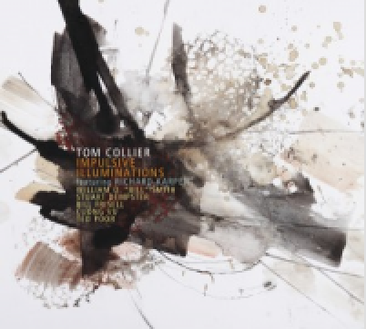

Tom Collier: Impulsive Illuminations
By
October 28, 2016
Vibraphonist Tom Collier offers up something quite different from his previous Origin Records CDs, where he covered the jazz standards like John Coltrane's "Giant Steps; Miles Davis' "So What," and some seemingly unlikely pop hits: The Rolling Stones "What a Shame" and Brian Wilson's "God Only Knows," alongside his own always engaging compositions. With Impulsive Illuminations, the thirty year University of Washington educator (now retired) explores the world of improvisation with pianist Richard Karpen, in the trio mode, with five different artists sitting in—one for each of the disc's extended tunes.
This is pure sound, the creation of atmospheres that can eliminate the listener's normal inclination to identify the inputs of the individual instruments. The piano/vibes pairing blends into a beautiful, luminous blur, and Bill Frisell's guitar—on the fifteen minute title tune/opener—glows in from another universe. Calling the sound "otherworldly" would be an understatement. It's the creation of a soundscape that slows time to a flow through a wavering liquid atmosphere via improvisational wizardry.
Drummer Ted Poor fills the third angle of the trio on "Odious Mode." The tune has more drive, with the snap of Poor's snare drum counterpointing the sustain of the vibes, combined with increase in tempo that injects turbulence to the fluid mood.
"Out of the Cistern" pulls things into even stranger territory. Taking as inspiration a Stuart Dempster recording (Dempster sits in on trombone and didjeridu on this tune) with Pauline Oliveros "that took place in an underground cistern with a 45 second reverberation time at Fort Warden State Park in Washington." Collier has recreated this reverb "by adding a sampled algorithm [that gradually] mathematically disappears so that there is zero reverberation by the end of the piece," according to the Collier-penned liner notes. Whether the process is understood or not, it makes for a ghostly fourteen minute tone poem of sound .
Clarinetist William O. "Bill" Smith joins Collier and Karpan on "Ligneous Oscillations," an abstract and eerie reverie; and trumpeter Cuong Vu contributes to this singular set with "Discontinuous Impunity," a gorgeous seventeen minute smear of avant-garde, in-the-moment composition that closes, perfectly, this singular, masterfully-crafted, in-the-moment set of sounds.
Track Listing: Impulsive Illuminations; Odious Mode; Out Of The Cistern; Ligneous Oscillations; Discontinuous Impunity.
Personnel: Tom Collier: vibraphone, marimba; Richard Karpen: piano; Bill Frisell: guitar (1); Stuart Dempster: trombone, didjeridu (3); William O. "Bill" Smith: clarinet (4); Cuong Vu: trumpet (5); Ted Poor: drums (2).
Year Released: 2016 | Record Label: Origin Records